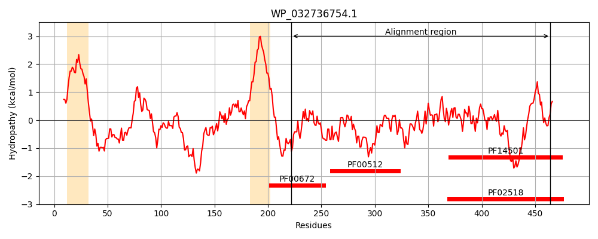
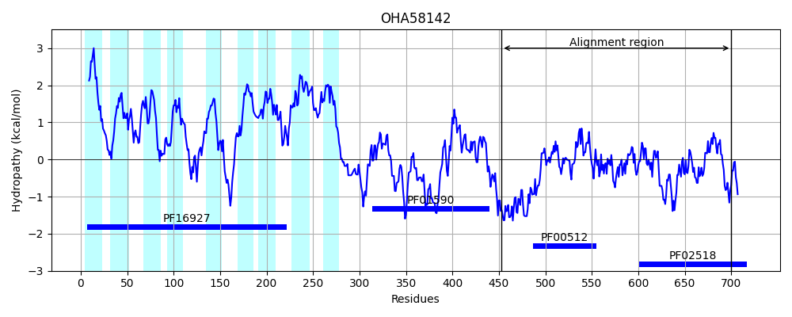
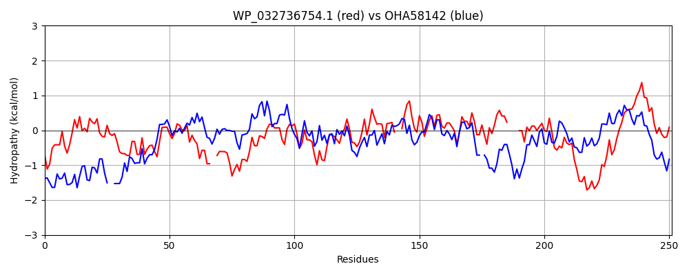

Hit Accession: OHA58142
Hit TCID: 9.B.259.2.2
Hit Description: gnl|BL_ORD_ID|7922 gnl|TC-DB|OHA58142.1|9.B.259.2.2 hypothetical protein A2607_01510 [Candidatus Vogelbacteria bacterium RIFOXYD1_FULL_42_15]
Mach Len: 251
e:0.000000
Query TMS Count : 2
Hit TMS Count: 9
TMS-Overlap Score: 0.350000
Predicted Substrates:None
BLAST Alignment:
Score: 236 , Bit scores: 95 bits, E-value: 6.9e-21, Alignment length: 251, Percentage identity: 24
Query: 222 SRDLDVRLDPQAVPIELERLALSFNHMLERIEDVFTRQSNFSADIAHEIRTPITNLVTQTEIALSQS--RSQQELEEVLYSNLEEFSRMSRMVSDMLFLAQADNNQLIPEQQALDLAEEVHKVFEFFEAWAEEKAVALRFV--GSHCRVMGDPLMLRRAISNLLSNAIRYTPAGQAVTIQLSESAE----TIRLVVENPGTPIAAEHLPRLFDRFYRVDPSRQRKGEGSGIGLAIVKSIVSAHHGSVAVQS 464
SR L ++D Q + L F + E+++++ +++ F + +H++R+P+T + + + L S + + E + E ++ ++ D L + + + ++ E LD+++ V + + + + F G ++GDP L + N++ NAI+YT G + + +S E IR ++ G I A++LP+LF++F R D + + G+G+GL + K IV AH+G + +S
Sbjct: 453 SRTLQQKVDEQTKDLANTNTELEFAN--EKLKELDKQKTEFVSIASHQLRSPLTAIKGYSSMLLEGSFGKLSAKSREAVQIVFESSQKLVGVIEDFLNITRIELGKMKYEMSVLDMSKMVESTINELKPSISRRGLTISFSAEGGPFNILGDPSKLNQVFLNVIDNAIKYTEKGD-IAVSISRRQEGGKNLIRFESKDIGVGIDADNLPKLFEKFIRADGAGKTNISGTGLGLFVAKQIVEAHNGKIWAES 700 | Protein Hydropathy Plots: |
|---|
|  |  |
Pairwise Alignment-Hydropathy Plot:
|
|---|
|  |